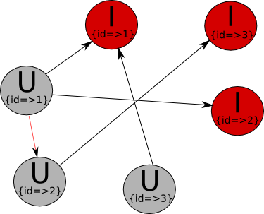
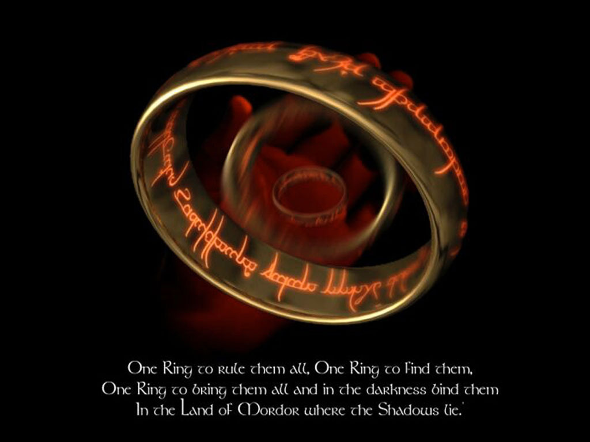
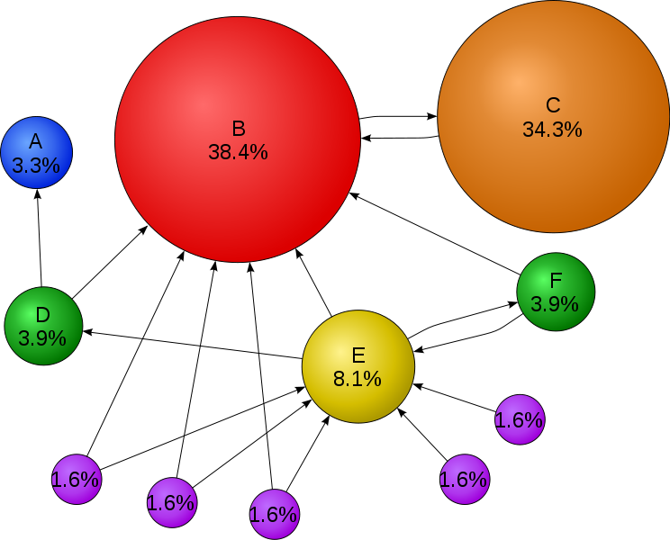
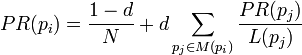
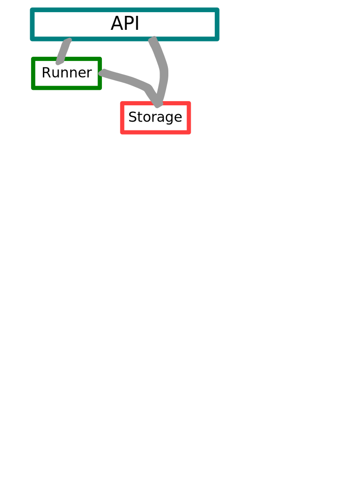

Your browser doesn't support the features required by impress.js, so you are presented with a simplified version of this presentation.
For the best experience please use the latest Chrome, Safari or Firefox browser.
From Tables to Graph
A GraphDB use case analysis
Who I am?
- Software Engineer
- Free and Open Source advocate
- Interested in Data centric applications, distributed systems, NoSQL, Graph, FLOSS, Ruby, ...
- Software Architect at Belectric IT Solutions GmbH


Table of Contents
- Motivations
- Recommendation Systems
- Content Based
- Collaborative Filtering
- Useful Tools
|
- The Taxonomy
- Motivations
- The things behind (Property Graph/Page Rank)
- Use case list
- Vendors
|
- Parts of the Engine
- Source code time
| |
Use cases
- To help clients discover new things
- Archive a better user experience
- To improve your shop revenues
- To win knowledge about your user base
- ”....”
Real Applications
- Music discovery (Spotify, last.fm, ...)
- Book recommendations (Amazon, ...)
- Movie discovery (Netflix, Moviepilot, ...)
- Content discovery and matching (Google News, paper.li, ...)
- Friend discovery (Facebook, Twitter, ...)
The Utility Matrix

What about using a graph?
Content Based
- Element similarity
- Profiles, Features (Tags)
- Discovery of Features
- Classifiction Algorithms
Content Filtering
- Calculate similarity (distance functions)
- Ratings normalization
- Clustering methods
- UV-Decomposition
- Root-Mean-Square Errors
Description of your data
How close are the user profiles to the item ones? but...
- The similarity method?
- What about if you dislike an item?
- Normalize data or not to normalize?
- Machine Learning or classification methods?.
The Distance
- Cosine Distance: The cosine of the angle between two vectors thus
determines whether two vectors are pointing in roughly the same
direction.
- Jaccard Distance: Measures similarity between sample sets, and is
defined as the size of the intersection divided by the size of the
union of the sample sets
Recommendations by similarity
- Jaccard distance is useful when our values are booleans
- Cosine distance works with different ranges
- We use to normalize
- The Duality, or problems, of the similarity computation
What about user, or items, aggregation?
Graph Processing

The Taxonomy
|
|
- Apache Giraph/Hamma
- Google Pregel
- Signal/Collect
- FlockDB
- ...
|
- Blueprints(.NET)
- Gremlin/Cypher/Pacer
- SparQL
- ...
|
Motivations
- Connections are receiving more attention
- We've more data, huge amount of data
- Graph are easy than discrete mathmatics
- We've the use cases, Social Networks, RecSys, ...
- Performance, Performance!!!!
The Property Graph

The PageRank
- Google algorithm for measuring the authority of a webpage based on the underlying network of hyperlinks.
- Each vertex distributes its authority to its neighbors in equal proportions


The PageRank (With Graphs?)
- The PageRank is the eigenvector of the Markov matrix defined by the transition probabilites between pages
- It can be obtained by iteratively multiplication of an initial vector M (power iteration)
Drawbacks
- Not intuitive, do you think on eigenvectors?
- Hard to implement
- Performance? Space?
Use cases
- Clustering (Communities)
- Social connexions
- Hubs
- Graph Mining
- Recommendation systems
- Geo Information systems
- Semantic Web
- Centrality Measures
|
- Task Planning
- Scheduling
- Process Assignation
- Routing
- Logistics
- Pattern recognition
- Link Analysis
- Optimization
|
Graph Database Performance
| Kernel S15 |
| 7.44 |
697 |
141 |
+24h |
| 0.0010 |
2.71 |
0.689 |
|
|
| 0.0120 |
0.0260 |
0.443 |
|
|
| 14.8 |
8.24 |
138 |
|
|
| 30 |
17 |
207 |
|
|
| Kernel S20 |
| 317 |
32.094 |
4.560 |
+24h |
| 0.005 |
751 |
18.6 |
|
|
| 0.033 |
0.0230 |
0.4580 |
|
|
| 617 |
7027 |
59512 |
|
|
| 893 |
539 |
6656 |
|
|
Reference: ....
Neo4j (at neo4j.org)
- Embedded, disk-based, fully transactional Java persistence engine that stores data structured in graphs rather than in tables.
- GPL, AGPL and Commercial License.
- High Availability, Scalability, ACID, REST-API
- Query Languages, Cypher, Gremlin, ..
- Choose your favourite language paradigm!
OrientDB

- An embedded pure java fast, transactional, scalable document-graph storage engine.
- Schema free, ACID, suport for SQL and JSON.
- Apache License 2.0
- Multiple Query Languages
- Choose your favourite language paradigm!
- More info: http://www.orientechnologies.com
Apache Giraph
- Google Pregel implementation on top of Hadoop
- Specialy developed for large scale graph processing
- Intuitive API, think like a graph!
- Bulk Synchronous Parallel (BSP) as execution model
- fault tolerance by checkpoint
- Currently Apache Incubator, Apache License
Signal/Collect
- Transparent Parallel Graph Algorithms execution
- Synchronous and Asynchronous execution models
- Implement the property graph
- Storage Large Graph on disc
- Suported by: Dynamic and Distributed Information Systems group from UZH and HaslerStiftung
- Available at: http://code.google.com/p/signal-collect/
Blueprints APIs

- Property Graph model interface to multiple Graph Processing projects.
- Suports: Neo4j, OrientDB, DEX, InfiniteGraph, Sesame 2.0 compilant RDF Stores, etc..
- From the creators of Gremlin, Pipes, etc..
- Open Source BSD like license
- Available at: https://github.com/tinkerpop/blueprints
But what about the real live?
Parts of the Engine

The Graph Hicker
- Used to walk the graph
- Can listen to events fired by your application
- Has specialized resources, algorithms and knowledge
- Prepare the graph for user centring algorithms
- Perform statistics of your graph
- Job centric, background oriented
- Can act like a cron job, or a cluster
The Graph Storage
- Has your graph stored
- Include high throuput methods
- What happends when you are delete?
- Can be distributed?
- Fire events to other systems (hicker, search, ... )
- Backup
The API
- Used by the different UI
- Access the different set of database
- Adapt data from the graph to the differnt UI formats
- Has authorization, and authentication methods
- ...
Let's see some code
Questions? - Fraguen? - Preguntas? - Preguntes?